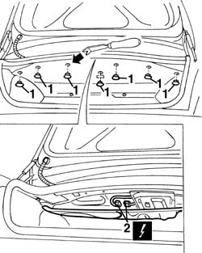
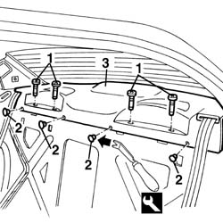
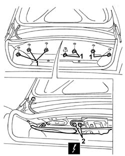
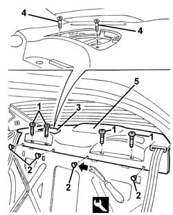

7040H80 parcel rack
- Path
- Procedures > 70 FITTINGS > 7040 BODYSHELL INTERIOR TRIMS AND FITTINGS > 7040H roof panel lining > 7040H80 parcel rack
- Kind
- repair procedure (removal / refitting; the operation number is the code)
- Applies to
- all engines; all production periods
- Interactive page
- https://sloeber94.github.io/elrnDB-a156/en/#/3238846
Applies to: all engines; all production periods
 Removing
Removing
 Refitting
Refitting7040H42 rear pillar trim - r r (left and right)
1. Open the boot lid and release the rear buttons retaining the upper luggage compartment lining.
2. Disconnect the electrical connection for the additional brake light.
 | Name | Connector |
|---|---|---|
2 | Additional ("third brake light") |

Applies to: all engines; all production periods
1. Release the pins for the head restraints.
2. Release the rear parcel shelf front retaining buttons using the special tool.
 | Name | Country |
|---|---|---|
2 | Scraper blade | 1.823.015.000 |
3. Remove the rear parcel shelf after having released it from the seat belts.

Applies to: all engines; all production periods
Refitting
RemovingCheck that the parcel shelf is undamaged.
Refit the rear parcel shelf positioning the seat belts.
Fit the rear parcel shelf front retaining buttons.
Fit the head retraint pins.
Connect the electrical connection to the additional brake light.
Do up the rear retaining studs on the luggage compartment top trim.
Check the operation of the electrical components involved.
7040H42 rear pillar trim - r r (left and right)
Applies to: all engines; all production periods; only with equipment: BOSE System
Removing
Refitting7040H42 rear pillar trim - r r
1. Open the boot lid and remove the rear buttons retaining the upper luggage compartment lining (turn it and extract it).
2. Disconnect the electrical connection for the third brake light.
| Name | Connector |
|---|---|---|
2 | Additional ("third brake light") |

Applies to: all engines; all production periods; only with equipment: BOSE System
1. Release the head restraint pins.
2. Release the front buttons retaining the rear parcel shelf using the special tool.
| Name | Country |
|---|---|---|
2 | Scraper blade | 1.823.015.000 |
3. Remove the speaker grille.
4. Unscrew the bolts
5. Remove the rear parcel shelf after having released it from the seat belts.

Applies to: all engines; all production periods; only with equipment: BOSE System
Refitting
RemovingCheck that the parcel shelf is undamaged.
Refit the rear parcel shelf positioning the seat belts.
Tighten the screws.
Fit the loudspeaker grille.
Do up the retaining studs, front
Fit the head restraint pins.
Connect the electrical connection for the third brake light.
Fit the rear buttons retaining the upper luggage compartment lining.
Check the operation of the electrical components involved.